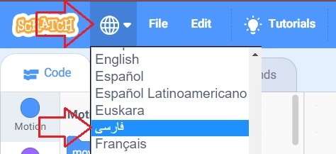
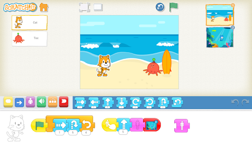

سلام بچه ها 
اول از همه باید به شما بگم که برنامه اسکرچ در بزرگترین دانشگاه فنی دنیا، یعنی MIT (بخونید اِم آی تی) رایگان و آزاد برای شما ساختن تا بتونید برنامه نویسی کامپیوتر رو یاد بگیرید.
توجه: 🤩 در همین صفحه من یک «ویدئوی آموزش نصب کامل اسکرچ» را قرار دادهام تا به همه سوالها و ابهام شما پاسخ دقیقتری رو بدهم. حتما بعد از خواندن مقاله، ویدئو را ببینید.
اسکرچ بر روی برخی از تبلتهای اندروئیدی نصب میشود (ادامه مقاله رابخوانید).
البته متاسفانه اندازه صفحه نمایش موبایل و یا تبلتهای معمولی برای یادگیری و کار با اسکرچ بسیار کوچک است و در صورت امکان باید از کامپیوتر و تبلتهایی با صفحه بزرگ برای یادگیری اسکرچ استفاده کنید.
برای دانلود و نصب اسکرچ بر روی کامپیوتر یا لپ تاپ از سایت اصلی آن کافی است روی لینک زیر دانلود کنید:
سوال) آدرسی که برای دانلود گفتید باز نمیشود؟
پاسخ) اگر در باز کردن آدرس مشکلی دارید میتوانید اسکرچ را از لینک زیر(که در همین سایت است) استفاده کنید. البته توصیه میکنیم که همیشه از سایت اصلی اسکرچ، دانلود را انجام دهید تا آخرین نسخه آن را داشته باشید:
سوال) آدرس سایت اصلی اسکرچ کجاست و چطور از آن دانلود کنم؟
برای دانلود به سایت اصلی اسکرچ به آدرس scratch.mit.edu/download بروید حال بر روی گزینه Direct Download (یا دانلود مستقیم) کلیک کنید.
نکته) سایت اسکرچ به فارسی ترجمه شده است و از قسمت پایین صفحه میتوانید گزینه "فارسی" را انتخاب کنید تا زبان کل سایت اصلی اسکرچ فارسی شود.
سوال) چرا باید «آخرین» اسکرچ رو از سایت «اصلیش» دانلود کنید؟
متاسفانه برخی از وب سایتهای فارسی، نسخه قدیمی اسکرچ با ترجمههای ناقص را برای دانلود قرار دادهاند و نباید از آنها دانلود کنید و همیشه از آخرین نسخه اسکرچ استفاده کنید.
نصب اسکرچ
برای نصب اسکرچ کافی است که فایل دانلود شده را اجرا کنید (برای اجرای فایل روی آن دَبل کلیک کنید) مراحل نصب شروع میشود و یک پنجره مانند شکل زیر برای شما با خواهد شد که روی گزینه Install باید بزنید. اسکرچ در کمتر از 1 دقیقه نصب خواهد شد:

سوال) آیا اسکرچ 3 روی ویندوز 7 نصب میشود؟
پاسخ: بله نصب میشود. (البته بر روی ویندوز xp نصب نمیشود)
سوال) آیا نصب اسکرچ 3 به کامپیوتر قوی و یا نرم افزار خاصی احتیاج دارد؟
پاسخ: خیر. اسکرچ 3 با تکنولوژیهای ساده و عمومی نوشته شده است و نیاز سخت افزاری و یا نرم افزاری خاصی ندارد. بر روی هر کامپیوتری به سادگی نصب میشود.
سوال) آیا اسکرچ بر روی موبایل و یا تبلت نصب میشود؟
پاسخ) خیر، روش بالا فقط برای روی کامپیوتر و لپ تاپ است و اگر موبایل دارید باید از نسخه آنلاین استفاده کنید که در ادامه به شما آن را توضیح خواهم داد. (اسکرچ بر روی برخی از تبلت های خاص قابل نصب است که متاسفانه جزئیات آن را نمی دانم.).
در ویدئوی آموزشی زیر به صورت کامل و قدم به قدم مراحل و نکات نصب و دانلود آخرین نسخه اسکرچ 3 را آموزش دادهام. لطفا این ویدئو را ببیند:
معرفی نسخه آنلاین برنامه اسکرچ 3
از برنامه اسکرچ 3 دو جور می شه استفاده کرد:
1) اونو دانلود و روی کامپیوتر خودتون نصب کنید که در بالا به شما توضیح دادم.
2) لازم نیست چیزی رو نصب کنید و از نسخه آنلاین استفاده کنید.
سوال) نسخه آنلاین اسکرچ یعنی چی؟
پاسخ: همون برنامه اسکرچ است که از طریق اینترنت میتونید ازش استفاده کنید و اصلا لازم نیست که هیچ چیزی رو روی کامپیوترتون نصب کنید. کافیه که همین الان به آدرس زیر بروید و از اسکرچ استفاده کنید:
scratch.mit.edu/projects/editor
سوال) آیا نسخه آنلاین و نسخه آفلاین اسکرچ (که بر روی کامپیوتر نصب میشود) باهم تفاوتی دارند؟
پاسخ: امکانات آنها کاملا مشابه است. تنها تفاوت در گزینهای به نام «کوله پشتی» است که در نسخه آنلاین وجود دارد و اجازه میدهد که در آن کدها (برنامههایی) را در آن ذخیره کنید تا بتوانید در پروژههای مختلف استفاده نمایید.
سوال) این آدرس باز نمیشه و یا کند است؟
پاسخ: سایت اسکرچ فیلتر نیست و کاملا آزاد و باز است و باید بتوانید که وارد آن شوید. با مرورگرهای مشهوری مانند فایرفاکس و کروم امتحان کنید.
سوال) آیا برای استفاده از نسخه آنلاین باید در سایت اسکرچ عضو شوم؟
پاسخ: خیر، عضویت لازم نیست و به سادگی میتوانید وارد نسخه آنلاین اسکرچ شوید. البته اگر در سایت اسکرچ عضو شوید، میتوانید پروژههایتان را با دیگران به اشتراک بگذارید، نظر بدهید و در جامعه آنلاین اسکرچ فعال باشید. من توصیه میکنم که حتما در سایت اسکرچ ثبت نام کنید. عضویت در سایت اسکرچ کاملا آزاد و رایگان است و با ایمیل خودتان و یا والدینتان میتوانید ثبت نام کنید.
مشکلات مشاهده شده در نسخه آنلاین اسکرچ
علامت منفی در سمت راست عدد نمایش داده میشود.
مشکلات مشاهده شده در نسخه آفلاین اسکرچ
گاهی در ورودی دستورها تایپ انجام نمیشود و باید یکبار اسکرچ را minimize / maximize کنید و یا یکبار روی دکمه Start ویندوز بزنید. (در واقع باید یکبار focus از روی اسکرچ خارج شود و مجدد اسکرچ فعال شود).
متن «my variable» در گروه متغیرها انگلیسی نمایش داده می شود و ترجمه فارسی نمایش داده نمیشود. (در نسخه آنلاین همین گزینه «متغیر من» نمایش داده میشود.
اسکرچ برای تبلتهای اندروئیدی
در سایت اسکرچ لینک Google Play Store که نسخهای برای تبلتهای اندروئیدی قرار داده شده است که ویژه فقط «تبلت» است و نه موبایل. البته من تاکنون نتوانستم بر روی تبلتها معمولی آن را نصب کنم! و روی ماشین مجازی هم که نصب شد، خطای WebGL را میداد  .
.
ظاهرا این نسخه فقط بر روی تبلتهای خاصی باز میشود.(که من ویژگی دقیق آن ها را نمی دانم)
نسخه فارسی اسکرچ
کلیه نسخههای اسکرچ (اسکرچ 1 و اسکرچ 2 و اسکرچ 3) به همه زبانها از جمله زبان فارسی ترجمه شده بودند. البته ترجمه اسکرچ 1 و 2 کامل نبود. اما اسکرچ 3 خوشبختانه کاملا فارسی است برای فارسی سازی اسکرچ 3 کافی است از گزینهی که به شکل «کره زمین» است، زبان فارسی را انتخاب کنید.

اسکرچ جونیور (ScratchJr) چیست؟
اسکرچ جونیور ایدهاش را اسکرچ گرفته است و برای آموزش کد نویسی به کودکان بین 5 تا 7 سال طراحی شده است و بر روی اندروئید، iOS و Chromebook قابل نصب است.
برای دانلود و نصب آن از Googgle Play استفاده کنید.

(اگر چه در مستندات اسکرچ جونیور سن بین 5 تا 7 سال قید شده است، اما توصیه شخصی من این است که در این سن یادگیری کد نویسی برای بچهها بسیار زوداست و بهتر است که از Scratch و در سنین 9 الی 14سال استفاده شود).
اسکرچ برای رزبری پای و لینوکس
اسکرچ نسخه 3 تا کنون به صورت رسمی برای لینوکس ارائه نشده است و باید از همان نسخه آنلاین آن استفاده کرد. البته تیم رزبری پای یک نسخه ویژه برای raspberry pi از اسکرچ 3 را تهیه کردهاند که در آخرین آپدیتهای raspberry pi OS به صورت پیش فرض نصب است.